Transaction Entry
This section describes, in general, how to enter a normal
transaction. Specific details of transaction entry for individual
transaction types are explained separately for each type later in this
chapter. This section is primarily concerned with entering transactions
details either by account code or by item code.
Tip: You can change the type by using a keyboard
shortcut. On the Mac press Shift-Ctrl-1 for Payment, Shift-Ctrl-2 for
Receipt etc. On Windows press Shift-Alt-1, Shift-Alt-2.
New Transactions in the
Navigator
To enter a new transaction through the Navigator, click the
appropriate New button. Depending on the button, the transaction entry
screen may open or you might be taken to
Use the Type menu to change the type of the transactions.
This should be done before entering any information.
the appropriate transaction list view and prompted by means of a
coach tip to use the appropriate command.
New Transaction from
almost anywhere
New button in Navigator
Clicking the Address Disclosure control again will hide the address
fields.
Changing the Mailing Address
To change the Mail field:
You can create a new transaction at almost any time by pressing
⌘-option-N (Mac) or Ctrl-Shift-N (Windows). This will not work if there
is a modal window (such as the Bank Reconciliation) or an Alert
displayed.
Delivery and Mail Addresses
Sometimes you will be asked to deliver items to a different address
than that of your customer, or send the invoice (or receipt) to a
different address.
MoneyWorks allows you to specify a mailing address and a delivery
address with each transaction—these will default to that of the customer
or supplier, but can be overridden if need be.
Viewing the Address Fields
To see the mail and delivery details in the transaction entry
window:
Click
the Address Disclosure control next to the To/From field
Click the Mail checkbox
The Mail field will be enabled, allowing you to type a new postal
address into it. Use the return key to split the address over more than
one line. Use the tab key to move to the next field.
Changing the Delivery
Address
To change the Delivery Address field:
Click the Deliver To checkbox
The Delivery Address field will be enabled, allowing you to type a
new address into it. Use the return key to split the address over more
than one line. Use the tab key to move to the next field.
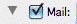
Set the Mail check box to change the Mail address.
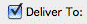
Set the Deliver To check box to change the Delivery
address.
The address fields will be displayed:
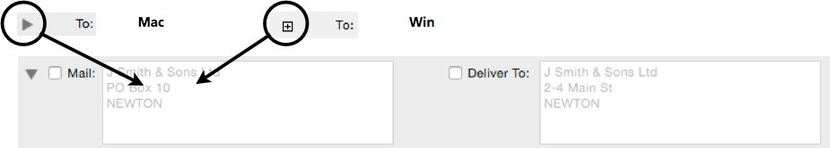
These will show the address details from the Name record, or if there
is no Name record will be empty. If the customer is a branch of a head
office, the Mail address will be that of the head office, and the
delivery address will be that of the branch. For purchase-oriented
transactions (Payments, Creditor Invoices, Purchase Orders), the
delivery address defaults to your own delivery address taken from the Company
Setup.
Note: Any changes you make to the address fields are
not permanent and apply only to the current transaction. If you want to
make the change permanent you need to change it in the corresponding
Name record.
Note: Do not check the Mail or Deliver To check
boxes unless you actually need to change the address from that shown. If
the check box is on, MoneyWorks will save a copy of the address with the
transaction regardless of whether you have changed it or not, which is
just a waste of your disk space.
Note: Custom forms will need to use the
Transaction.MailingAddress and
Transaction.DeliveryAddress pseudo-fields in order to print the
correct addresses on statements, invoices and other forms.
Drop Shipping
To order goods from a supplier and have them shipped to one of your
customers, click the Deliver To button to the right of the Delivery To
address. The Names choices will be displayed, and the delivery address
of whoever you select from this will be inserted into the transaction
delivery field.
Entering Detail Lines
The total amount of the transaction needs to be allocated to one or
more accounts. This allocation is done in the detail lines of the
window. Although entering into detail lines is the same for cash and
invoice transactions (see below), each transaction type has a slightly
different set of fields to be filled in at the top of the transaction
entry window.
For Payments see Entering
Payments. For Receipts see Entering Receipts.
For Debtor Invoices see Entering Sales
Invoices.
For Creditor Invoices see Entering a Purchase
Invoice. For Purchase Orders see Entering a Purchase
Order.
For Quotes and Sales Orders see Entering
a Sales Order. For Stock Journals see Entering a Stock
Journal.
For General Journals see General Ledger
Journals.
In general there are two sorts of detail lines, which can be
entered:
MoneyWorks uses the terms By Account and By Item
for these two methods of detail line entry. You choose which method of
entry you wish to use by choosing the appropriate tab in the transaction
entry screen.
If
the desired transaction entry method is not already selected, select it
by
clicking the tab for that method
The detail line section of the transaction entry window will change
to reflect the method you have chosen.
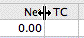
MoneyWorks will remember the
selected entry method for each transaction type. If you always use the
By Item entry method for your invoices and By Account
method for everything else, you will only need to select the method once
for each transaction type.
Tip: You can resize the columns in a transaction by
positioning the cursor between the columns in the column headings (the
cursor will change shape), and dragging.
Resizing columns in the transaction window.
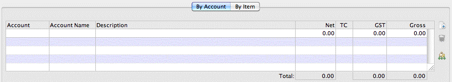
By Account detail line entry
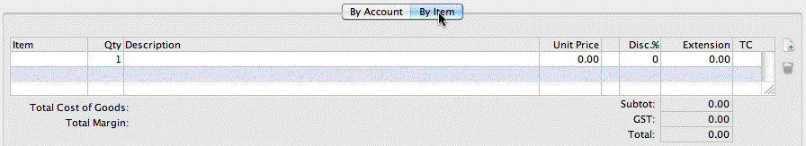
By Item detail line entry
These are the two detail line formats for item entry and account
entry. The Item entry method has fields for Item Code, Quantity,
Description, Unit Price, Units, Discount, Extension and Tax Code (and,
optionally, tax amount). The Subtotal, total tax and grand total are
shown below. The Account entry method has fields for Account Code,
Account Name (display only), Description, Net Amount, Tax Code, tax and
Gross (tax inclusive) Amount. If the Show Job Column preference
option is set, both entry methods include a Job Code field.
Click
in the first column of the detail line, or press Ctrl-Tab (Mac) or
Ctrl-` (Win5) or just tab through all the
header fields
MoneyWorks automatically creates one detail line whenever a
transaction is created. You can add more if you need to.
Now follow the steps in Entering Account Detail Lines or Entering
Item Detail Lines as appropriate.
Auto-Allocation
If you have set up Auto-Allocation accounts, the detail lines for
By Account
transactions will be created for you automatically:
For Name Auto-Allocation When you start to enter a
value into the transaction Amount field for a transaction against a Name with
an Auto-Allocation
—see Default Account;
 For Manual
Auto-Allocation Click the Auto-allocation icon or press
Ctrl-U/⌘-U after having entered both 1) the match
For Manual
Auto-Allocation Click the Auto-allocation icon or press
Ctrl-U/⌘-U after having entered both 1) the match
text into either the To or the Description fields
and 2) the
When you press the Tab key, the account name and tax rate will be
entered for you.
If you leave the account field blank, or type an incorrect or
incomplete one, the account choices window will open —see Entry and Validation where a Code is Required. Select the account you
require by double-clicking on it.
If the account has a Sticky Note
associated with it that is applicable to this type of transaction, the
note will be displayed when you exit the field.
Detail Description
2.
Enter a description for the monies pertaining to this account into the
Description field
The description can be up to 1000 characters. If you need to start a
new line (i.e. insert a “carriage return”), press Ctrl-↩︎/Option-Return6. If you run out of space click on the down
arrow icon or press Ctrl-↓/⌘-↓ to open a separate window for typing the
text.
If the I need to Account for GST/VAT/Tax preference option
is on, there will be
Amount of the transaction —see Setting up
an Auto- Allocation for General
Transactions.
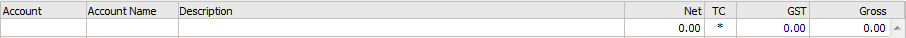
Entering Detail Lines by
Account
Click the Auto-
allocate icon to apply a named allocation.
separate columns for entering the Net, GST and Gross amounts for each
detail line. If the option is off MoneyWorks will not monitor Tax and
only a single Amount column will be displayed.
Using the By Account, method of detail line entry allows you to
specify the account (and department, for departmentalised accounts),
and, if necessary, override the default tax code for the account or even
the actual tax amount.
1.
Enter the account code into the Account field and press tab
If the account has departments (MoneyWorks Gold), you must also
include the department code after the account code. For
example:“1000-JK” for account “1000”, department “JK”.
If the transaction is a Payment or a Creditor Invoice, this account
will be debited by the net amount that you enter on this detail line. If
the Transaction is a Receipt or a Debtor Invoice, this amount will be
credited by the net amount that you enter on this detail line.
When the I need to Account for GST/VAT/Tax preferences option is on,
columns are displayed in each detail line that allow you to enter either
the Tax exclusive amount (Net) or the Tax inclusive amount (Gross)
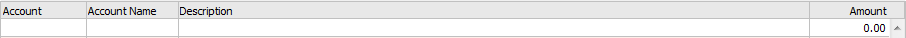
When the I need to Account for GST/VAT/Tax preferences option is off,
a single column (Amount) is displayed, and no calculations are done for
tax.
Click
or tab into either the Gross or the Net fields and
enter the amount to
be debited or credited to the account
If you enter the net amount, the Tax and gross will be calculated. If
you enter the gross amount, the net and Tax are calculated
automatically.
If the Auto-Calculate Transaction
Total option in the Data
Entry preferences is set, the sum of the amounts in the Gross
column will be entered into the transaction Gross field for you. This is
the default for cash receipts and debtor invoices.
Changing the GST/VAT/Tax
If the Tax for this part of the transaction is different from that
calculated using the default tax code for the account, you can overtype
either the tax code (which will cause the Tax amount to be recalculated
using the net amount and new tax code) or the Tax amount itself. If the
Tax on a purchase bears no apparent relationship to the codes, US and
Canadian users can override the total
transaction tax.
Note:
MoneyWorks will display a warning if you alter the amount in the Tax
field. It is only on rare
occasions that you will need to do this, as for example if the Tax
rounding on an invoice is different.7
Canadian GST and PST: The aggregate GST and PST for
the line is shown in the Tax column. These are shown separately when you
print the GST Report.
If the Show Job
Column option is set in the Jobs
preferences, you can also specify the job (if any) to which the detail
line refers —see Automatic Entry from the Transaction File.
If
you need to allocate the remaining amount of the transaction to further
accounts, make a new detail line
tabbing through the remaining fields on the current line, but only if
the
Auto Wrap option is off.
Pressing ↩︎/Return when you are on the last detail line will cause a
new detail line to be added. If the insertion point is not on the last
detail line when you press ↩︎/return, the insertion point merely moves to
the Account field on the detail below the one you were on.
Entering Detail Lines by
Item
Using the By Item method of detail line entry allows you to
specify an item code and a quantity. Behind the scenes, MoneyWorks will
insert the appropriate accounts as specified in the Control Accounts
section of the Item record. See Items, Products and
Inventory
Note: If you have serial/batch and/or location tracking
turned on there will be additional columns in the product entry screen
to allow for the entry of serial/batch numbers and/or location.
Enter
the Code or Barcode of the item in the Item column, and press tab8
The item description, unit price, units, standard discount and
extended price (i.e. quantity multiplied by unit price less discount)
will be automatically entered for you into the appropriate columns.
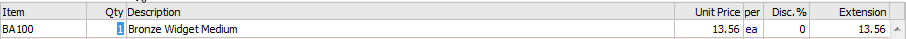
If you do not need to alter the quantity or other line details, you
can press
↩︎/return instead of tab to have the next detail line automatically
created.
If you type in an incorrect item code, or leave it blank, the Item
choices list
by:
pressing ↩︎/Return or; pressing Ctrl-N/⌘-N or;
clicking the New Detail line icon or;
Click the New Detail line icon to append a new detail line,
or shift-click it to insert a new detail line above the current
line
will be displayed. Select the item you require by double-clicking on
it, or, if it is a new item, click the New button to record the
item details.
If you have entered a barcode that is not unique, the item choices
window will be displayed listing all items with that barcode.
If the item has a Sticky Note
associated with it that is applicable to this type of transaction, the
note will be displayed when you exit the field.
If you are entering a payment or a creditors invoice for the item,
and you have not set the We Buy This check box, a message will
be displayed saying “You do not buy this product”. If you want to buy
the item, you will need to modify its details in the item file -see Creating a New Item.
If the Show Job Column option is set in the Transaction
Entry preferences, you can also specify the job (if any) for which the
item is to be used.
4.
If you need to allocate the remaining amount of the transaction to
further accounts, make a new detail line
If you are entering a receipt
or a debtors invoice for the item, and you have not set the We Sell
It check box, a similar alert box with the message “You do not sell
this product” will be displayed. If you want to sell the item, you will
need to modify its details in the item file.
In
the Qty column, type in the quantity of the item that you are purchasing
or supplying, and then press Tab
The quantity can be a
fractional value with up to 4 decimal places.
by:
pressing ↩︎/Return or; pressing Ctrl-N/⌘-N or;
clicking the New Detail line icon or;
tabbing through the remaining fields on the current line9
Click the New Detail Line icon to create a new detail
line.
If
you wish to change the description, unit price, discount, extension or
tax code, tab into that field and overtype the contents
Although MoneyWorks has entered the item description, unit price
(based on the customer’s price code) and discount and calculated the
extension, you can change any of these values. Note that the prices are
assumed to be in the currency of the customer/supplier or bank
account.
If you change the unit price, the extension will be recalculated
using the new price and the quantity and discount already entered.
If you change the discount, the extension will be recalculated using
the new discount and the existing quantity and unit price.
If you change the
extension, MoneyWorks will calculate a new discount rate so that the
formula: Extension = Qty * Unit Price * Discount% still holds.
Pressing ↩︎/Return when you are on the last detail line will cause a
new detail line to be added. If the insertion point is not on the last
detail line when you press ↩︎/Return, a new detail line is not
created—the insertion point merely moves to the Qty field on the detail
line below.
5.
If you need to enter further items, make a new detail line by:
pressing ↩︎/Return or
by pressing Ctrl-N/⌘-N or
by tabbing through the
remaining fields on the current line
Removing detail lines
Sometimes you will see a very small (say 0.0012%) discount showing in
the discount column. This occurs for fractional quantities or prices
when the extension is rounded to the nearest cent.
In the case of the description, you may want to click at a point in
the text
If you need to remove a detail line:
Ensure
that the insertion point is in one of the fields on the line
Click the Delete
Detail Line icon to remove the current detail
line.
and simply add or remove some text.
If the Show Tax Column option is set in the Transaction
Entry preferences, an extra column will be displayed showing (and
allowing you to modify) the amount of GST/VAT/Sales Tax associated with
the detail line.
Click the Delete Detail Line icon, or press: Option-⌘-D (Mac)
or Ctrl-Shift- D (Windows), or choose Edit>Delete Detail Line
The line will be deleted. Note that lines without account codes are
automatically removed when the transaction is accepted (if the line has
a value, this will cause the transaction to go out of balance, and
MoneyWorks
will decline to accept
it).
Alternatively, you can Right-click (option click if you must use a
one button Mac mouse) on the detail line and choose Delete Detail
Line from the contextual menu that appears
Inserting Detail Lines
To insert a new detail line somewhere other than the end of the line
item list:
Click
in any cell of the detail line that you want to insert a line above
Changing between By Account and By Item
Entry
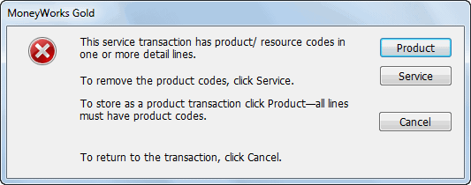
Once you have entered a
transaction using the By Item entry method, you can change its entry
method to By Account by clicking on the By Account tab. If you
do this, the detail lines will change to display the account codes, net,
tax and gross columns. If you then click the OK or
Next button, or press the keypad- enter key, the following
message will be displayed:
Hold
down the Shift key and click the New Detail line icon
A new line will be inserted above the active line and the first cell
will be activated.
Reordering Detail Lines
The detail lines in an unposted transaction can be reordered:
Click the New Detail line icon while holding the Shift key
to insert a new detail line above the active line.
A transaction can be either By Account or By Item.
Having created it as By Item, you are attempting to save it as By
Account. MoneyWorks is warning you of this,
Position
the cursor over the detail line to move and hold down the shift and
control keys (Windows) or the option key (Mac)
The cursor will change
With
the shift-control/option key still held down, drag the detail line up or
down to its new position
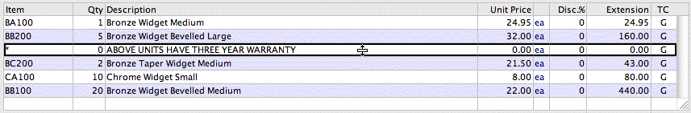
and giving you the option of saving it in either form. If you save it
as by account, all the item information (except the description) will be
removed, and the extended price will become the detail net value.
Note: It is possible to enter the details for an
Item transaction, switch to By Account, alter the account codes
and switch back to By Item. The transaction will be saved with
the altered account codes. Care should be taken in doing this to ensure
that the altered account codes are meaningful in the context of the
transaction.
Recording Jobs in
Transactions
You can assign individual transaction detail lines to jobs. This
enables you to track income and expenditure by job, which is normally
totally independent of the structure of your chart of accounts. You can
then extract information about costs for the various jobs.
To assign detail lines to jobs, the Show Job Column option
must be on —see Job Preferences. This causes an additional
column called Job to be displayed at the right hand side of the detail
lines. It also causes an extra job column to be printed when transaction
lists that show detail lines are printed.
To assign a transaction line to an individual job:
Create
a new transaction and detail line in the usual manner
Enter the job code in the right-most column of the detail
line
The information in the detail line will be tagged against that job.
For MoneyWorks Gold, if the Enable Job Costing and Time Billing
option is set, a new job sheet entry will be created when the
transaction is posted.
If the job code does not exist, and the Allow any value in job
column job preference option is off, the Job Choices window will be
displayed. Double- click
the job you require in the list, or click New to create a new
job.
Note: If the Job Code Required option is
set in the associated account code
—see MoneyWorks Accounts, you
will be required to specify a job in the job column for transactions
other than journals, otherwise it is optional.
For a full discussion on job control see Job
Control.
Adjusting GST/VAT/TAX
Rounding
Some other accounting systems use different rounding methods (often
simply rounding all half cent values upwards), or calculate tax totals
based on the entire transaction Net, instead of by line-item. When you
receive an invoice from a supplier who uses one of these systems, the
Tax total may differ by a few cents from that calculated by MoneyWorks.
In such cases, it is desirable to make the Tax rounding (and hence the
invoice total) match the invoice you have received.
When you find that a supplier invoice total, as calculated by
MoneyWorks, differs by a few cents from the original invoice (due to Tax
rounding):
Choose
Edit>Adjust GST Rounding, or press Option-⌘-A (Mac) or Ctrl- Shift-A
(Windows)
The rounding of any half-cent GST values will be forced to match the
invoice line-item gross values to add up to the total invoice amount
entered.
Sales Tax Override (USA
and Canada Only)
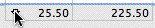
Sometimes invoices you
receive will include a sales tax total without any indication of which
items have incurred the tax and which have not. In these situations, the
automatic line-by-line tax allocation done by MoneyWorks is not going to
useful. To allocate the entire tax on a transaction:
Click
the Down Arrow icon next to the tax total at the bottom of the entry
screen
MoneyWorks calculates GST/VAT/TAX for every line item. This makes it
very easy to enter transactions for items with different tax rates. It
does also mean that the tax gets rounded per line item.
The Tax Override window will open:
Click the Down Arrow or the tax amount to open the Tax
Override Window
As of MoneyWorks version 9.0.2, you can choose between
Round-Half-Even and Round-Away-From-Zero (round halves "up") for
rounding half cent values.
Documents created in MoneyWorks versions before 9.0.2 will have
Bankers' rounding set by default. (Banker's Rounding (also known as
Round-Half-Even, meaning half-cent values are rounded towards an even
whole number)‚ which reduces the incidence of accumulated rounding
error). New documents created with 9.0.2 and later will default to Round
Away From Zero.
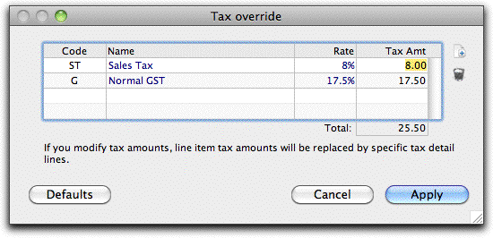
Enter
the actual tax amounts as specified on the invoice
If the appropriate tax code isn’t displayed in the list,
click the New icon to add it
Only base tax codes can be used (you cannot code to a composite
one—see Sales Tax and PST for
details of these). Unused taxes can be deleted using the Delete (Trash)
icon.
Click Apply to apply the
taxes
Any tax will be stripped off the existing lines on the invoice, and a
new line will be added for each of the taxes specified in the Tax
Override screen. The tax codes on the existing lines will be changed to
“*”, so you will not be able to alter these tax amounts.
Note: Sales tax is normally treated as part of the
cost of the item being purchased (unless you have an exemption for the
item). If the Tax Override is used, MoneyWorks can no longer apportion
the tax to each line of the transaction; instead all tax is apportioned
to the general ledger code used in the first line of the invoice.
Note:
If using an Item transaction, MoneyWorks will create a new Item “~TAX”,
and the tax lines will be allocated against this.
To Restore a Transaction to use the Default Taxes
Open
the Tax Override screen by clicking on the down arrow
Click the Defaults button
The tax lines will be removed, and the tax restored to the default on
each line. You would only do this if you changed your mind and wanted to
undo the override on an unposted transaction.